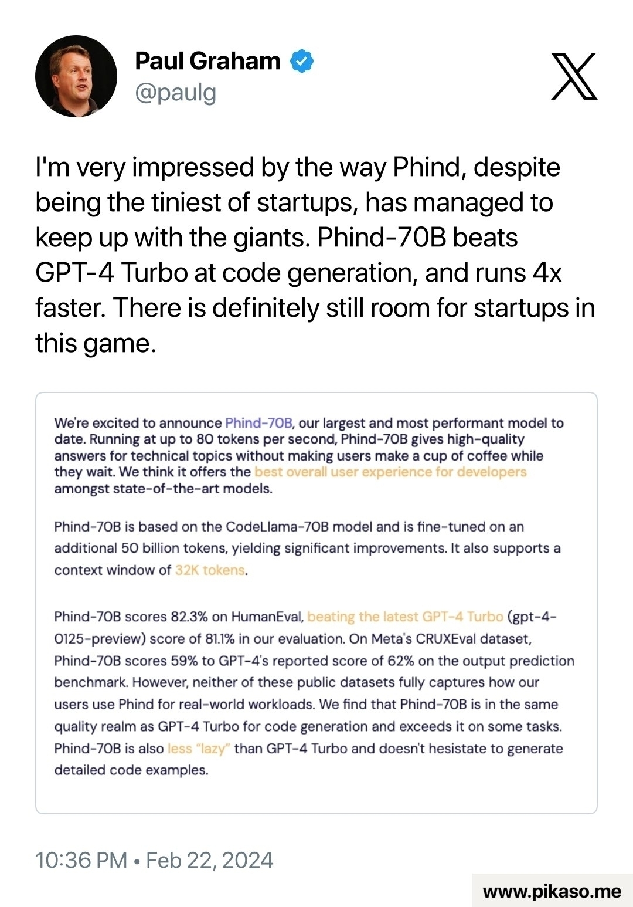

I am huge fan of Phind. Once GPT started getting lazy I moved over to using Phind and Perplexity. I don’t think I will be going back.
“Therefore I exhort you, brothers and sisters, by the mercies of God, to present your bodies as a sacrifice—alive, holy, and pleasing to God—which is your reasonable service.”
Romans 12:1 (NET)
NET Translator’s Notes: The participle and two adjectives “alive, holy, and pleasing to God” are taken as predicates in relation to “sacrifice,” making the exhortation more emphatic. See ExSyn 618-19. Taken as predicate adjectives, the terms alive, holy, and pleasing are showing how unusual is the sacrifice that believers can now offer, for OT sacrifices were dead. As has often been quipped about this text, “The problem with living sacrifices is that they keep crawling off the altar.”
Apple launched a new iPhone app today called Apple Sports, giving users a one-stop location to check scores, team stats, betting odds, and more across a number of major sports leagues. The app supports the NBA, NHL, NCAA, Premier League, and several other leagues at launch, including MLS — the soccer league Apple has exclusive streaming rights to.


So start slowly. Build something small, fix a small niche problem first. Make some money and keep growing the niche, and keep growing bigger.
Aggressive Thinking
I interviewed an exceptional candidate today. He had diverse experiences solving various problems and a proven track record of success. What really impressed me was his strong critical thinking skills, which was the main focus of the interview.
I’ve noticed a common mindset among highly successful individuals, which I’d describe as “aggressive thinking,” a term I first heard from Jocko Willink. It seems to stem from a combination of unwavering confidence, a strong level of agency, and sharp critical thinking.
Aggressive thinking is essentially the ability to quickly analyze a problem, apply personal frameworks or models to it, and systematically break it down through trial and error rapidly. It’s like dissecting a problem into manageable parts, evaluating each one separately, and then piecing them back together to gain a deeper understanding of how to tackle it.
People who exhibit this mindset can learn from various experiences and apply those lessons in different situations. They exude confidence while also being introspective and self-reflective. A clear indicator is someone who achieves significant success in unrelated roles in a short period. These individuals propel businesses forward and inspire growth in those around them.
This is more of a theory based on observing patterns among these individuals, but it’s something I am actively exploring further and attempting to quantify.
I would love to hear if anyone has experienced this or seen similar patterns.
“It’s a savagely unhealthy housing market,” Mohtashami told me. “But it’s also a market that just had too many people chasing too few homes.”
I made an iOS shortcut that quickly proofreads and enhances highlighted text. You need the ChatGPT app installed on your phone, but you don’t need a Pro subscription.
Highlight some text, like a message you haven’t sent yet. Tap “Share…” in the menu that appears. Choose this shortcut from the options, and you’re finished! It will send the text to ChatGPT, show a preview of the next text, and copy it to the clipboard!
Yet the McKinsey Global Institute (MGI) finds that twice as much potential value lies in using social tools to enhance communications, knowledge sharing, and collaboration within and across enterprises. MGI’s estimates suggest that by fully implementing social technologies, companies have an opportunity to raise the productivity of interaction workers—high-skill knowledge workers, including managers and professionals—by 20 to 25 percent.
Growth Hacker Marketing by Ryan Holiday headway.onelink.me
"The end goal of every growth hacker is to build a self-perpetuating marketing machine that reaches millions by itself."
I have been experimenting with bookmarks for highlights. I have replaced the reader archive section with a quote block containing a highlight. The end result looks like this:
How Not to Be Stupid fs.blog
”It took me about a month, and I defined stupidity as overlooking or dismissing conspicuously crucial information.”
On the micro.blog timeline it is just a standard set quote blocks, but on my blog it looks very close to a link preview.
How Not to Be Stupid fs.blog
”It took me about a month, and I defined stupidity as overlooking or dismissing conspicuously crucial information.”


Currently reading: Million Dollar Weekend by Noah Kagan 📚

This doesn’t end well for anyone.
The new report found total credit card balances hit $1.13 trillion by the end of December, the highest credit card balance since at least 2003 and a 4.6 percent increase from the third quarter of 2023.
Source: Credit card debt on the rise
While delinquencies have been climbing across age groups, the flow into serious delinquency was particularly acute among younger millennials between the ages of 30 and 39 and lower-income households, the New York Fed noted.
Source: Millennials are struggling under mounting credit card debt
After spending about a month on Bluesky, it feels like all the worse parts of the Twitter community with a pretty wrapper. I didn’t see a lot of valuable discourse compared to Micro.blog, Mastodon, or even Twitter itself.


Arc Search - your new default mobile browser by The Browser Company, helps you move even faster. It brings everything you are searching for, to you – quickly and without distractions. Source: Arc Search: Find Everything, Faster

The Minimal Phone stands out as the best choice for those seeking efficiency and simplicity. With its full QWERTY keyboard, long-lasting E-Ink display, and custom MnmlOS, it brilliantly balances productivity, security, and user comfort, redefining the smartphone experience.

Skynet is getting closer every day. This is terrifying.
At the speed society evolves, so too does warfare. pic.twitter.com/qU9lP5WAGT
— Joshua Hartley (@JHartley2) January 22, 2024

Unified calendar is seriously broken!
I have calendars for work, personal, and my relationship. Each platform has been necessitated by the use case. Work is on Office 365, personal is Gmail for Notion Calendar, and my relationship calendar is on iCloud for sharing and travel time.
iCloud calendar is bar none on mobile but lacks great web functionality. Notion Calendar is great on web but lacks Office 365 and iCloud support. I really hope Notion expands beyond Google account support. The ability to add Notion docs to various calendar events and have a habit view on the same interface would be priceless.
Last night, we tried out PennePazze, an Italian restaurant in L&L Market. I was pleasantly surprised by the staff’s service, the owner was even in the kitchen whipping up pizzas. Food was stellar and drink selection was probably the highlight, especially if you’re a wine drinker. It was packed so we sat outside in the screened patio. The prices were decent.